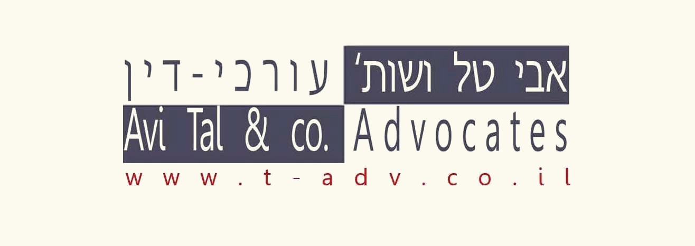

מערכת ניהול לידים
התחבר עם חשבון Google
כניסה עם Google
טוען...
המשך
לידים
הוסרו
0 עם הערות
0 לידים
טוען...
המשך
פגישה
תזכורת
לא נענו
המשך
פגישה
תזכורת
הסר
הכתב (מיקרופון)
שמור ב-Google Sheets
חזרה
סיכומי שיחות
הוסף סיכום שיחה
ערוך
חזרה
עריכת סיכומי שיחות
זהירות: עריכה ידנית של כל הלוג
שמור
ביטול
עריכת סיכום שיחה
שמור
מחק
ביטול
חזרה
תזכורות
קביעת פגישה
שמור פגישה
‹
—
›
א'
ב'
ג'
ד'
ה'
ו'
ש'
שעת התחלה
--:--
ידני:
:
סיום:
—
שומר...
אישור
ביטול
אישור